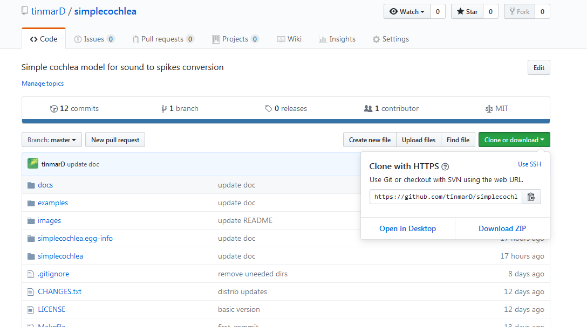

The simplecochlea package runs with Python 3. The Anaconda Python 3 distrubition is recommended :
If you already have Anaconda installed, you can create a new environment to avoid any troubles with your current setup :
$ conda create --name simplecochlea_env python=3.6 numpy cython # Activate the new environment $ activate simplecochlea_env # on Windows systems $ source activate simplecochlea_env # on Unix systems
With pip and git :
$ pip install git+https://github.com/tinmarD/simplecochlea.git@master
From github :
Download the zip file of the simplecochlea project from github

Extract the archive and in a terminal (or in the Anaconda prompt), go to the simplecochlea root directory and run :
$ python setup.py install